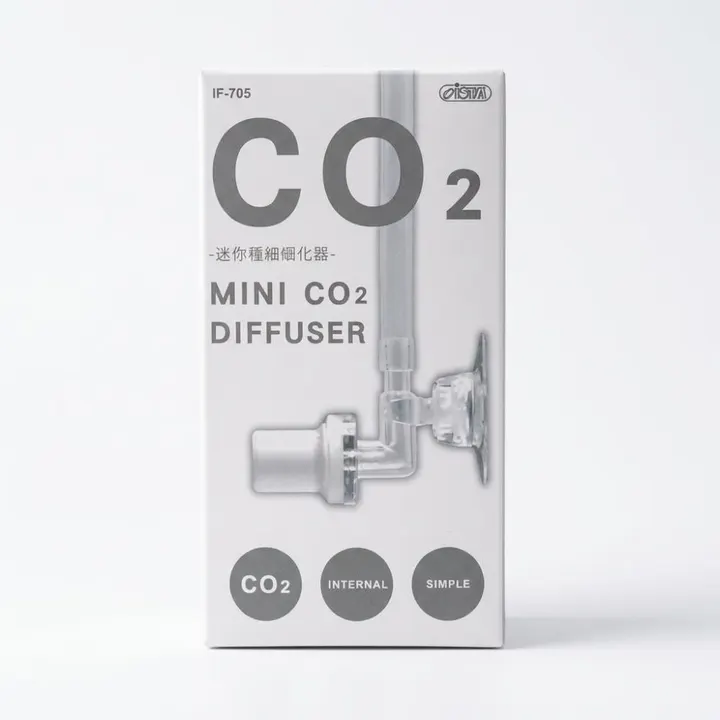

من مجموعة أكوا هافنAQUA HAVEN / THE COLLECTION
ناشر CO₂ ميني ISTA
ناشر CO₂ ميني من ISTA بتصميم صغير ومدمج، يفتّت ثاني أكسيد الكربون إلى فقاعات دقيقة ويرفع ذوبانه في ماء الحوض المزروع.
٥٥ ر.س
متاح ضمن اللقطة المرجعية
مساحة للاكتشاف، قبل الاختيار.
واصل استكشاف المجموعة هذه معاينة للتصميم. الأسعار والخيارات والتوفر مرجعية وغير متزامنة؛ لا يمكن الطلب أو الدفع من هذه الصفحة.
A CLOSER LOOK
نظرة أقرب.
ناشر CO₂ ميني ISTA – IF-705 — ناشر داخلي صغير للأحواض المزروعة، يحوّل ثاني أكسيد الكربون إلى فقاعات دقيقة ليذوب في الماء بكفاءة أعلى.
المواصفات الأساسية
- العلامة: ISTA
- الموديل: IF-705
- النوع: ناشر CO₂ داخلي
- المواد: بولي كربونات (PC) وسيراميك
- التثبيت: قاعدة شفط مع مشبك
- بلد الصنع: الصين
المميزات
- تصميم صغير ومدمج لا يزاحم المنظر داخل الحوض
- ينتج فقاعات CO₂ دقيقة
- يرفع معدل ذوبان CO₂ في الماء
طريقة الاستخدام
- يُستخدم مع عدّاد فقاعات وصمام منع رجوع.
- وصّل خرطوم CO₂ بالناشر، وثبّت قاعدة الشفط والمشبك، ثم ضعه داخل الحوض.
- افتح أسطوانة CO₂ وانتظر حتى تبدأ الفقاعات بالخروج، ثم اضبط المعدل حسب حاجة الحوض.
العناية
يمكن تنظيفه بالمبيّض، مع شطفه جيدًا بالماء قبل إرجاعه إلى الحوض. يُحفظ في مكان بارد بعيدًا عن أشعة الشمس وعن متناول الأطفال.